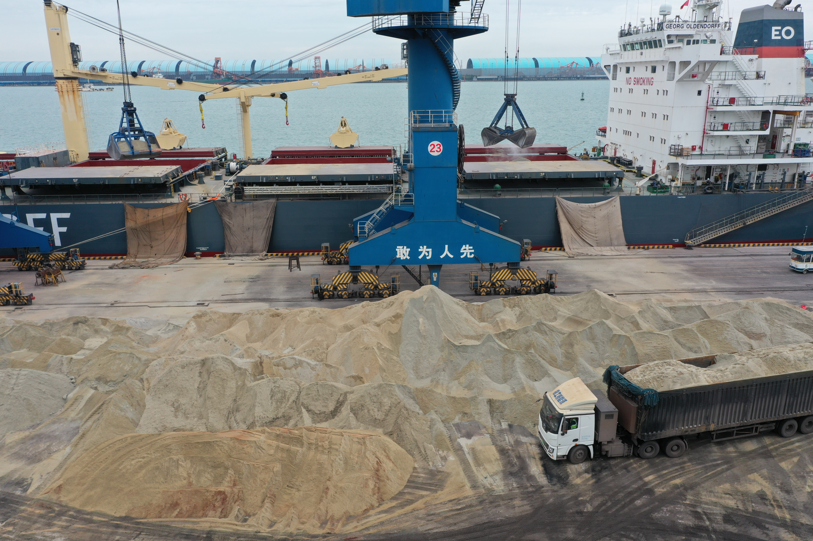

Saudi Arabia's Red Sea Express: A New Lifeline for Cement and Slag Trade to Africa
As the Strait of Hormuz remains closed to commercial traffic, Saudi Ports Authority (Mawani) has launched the Red Sea Express — a new cargo service linking Yanbu, Ain Sokhna, and Aqaba, with additional routes connecting Jeddah to Salalah and Djibouti. For cement and slag exporters targeting African and Middle Eastern markets, this is not just an alternative route. It is a structural shift in how bulk construction materials move across the region.
沙特红海快线：通向非洲的水泥与矿渣贸易新生命线
随着霍尔木兹海峡持续对商业航运关闭，沙特港务局（Mawani）正式推出红海快线——一条连接延布、艾因苏赫纳和亚喀巴的新货运航线，并辅以吉达至塞拉莱和吉布提的联运网络。对瞄准非洲与中东市场的水泥及矿渣出口商而言，这不仅是一条替代航线，更是大宗建材区域流通方式的结构转变。

On 19 May 2026, Saudi Arabia's Ports Authority (Mawani) inaugurated the Red Sea Express, a new cargo shipping service with a capacity of up to 1,100 TEUs connecting King Fahd Industrial Port in Yanbu with Ain Sokhna in Egypt and Aqaba in Jordan. Within days, a second service linking Jeddah Islamic Port with Salalah in Oman and Djibouti was announced, carrying 1,730 standard containers. Both services were launched explicitly in response to the ongoing closure of the Strait of Hormuz, which has forced bulk and container traffic to seek alternative corridors between the Gulf, the Red Sea, and East Africa. For the cement and supplementary cementitious materials trade, the implications are immediate and significant.
1. Why the Red Sea corridor matters for bulk cementitious cargoes
The Strait of Hormuz closure has added thousands of nautical miles to traditional Gulf-to-Europe and Gulf-to-Asia routes, forcing vessels around the Cape of Good Hope and driving up bunker costs, charter rates, and transit times. For dry bulk carriers moving clinker, GBFS, and GGBFS, the longer voyages mean higher delivered costs and tighter vessel scheduling. The Red Sea Express does not eliminate the Hormuz problem — it bypasses it entirely for cargoes that can be loaded on Saudi Arabia's western coast. Yanbu and Jeddah offer direct Red Sea access to Egyptian ports, Jordan's Aqaba, and onward connections to Sudan, Eritrea, and the broader Horn of Africa. For Chinese and Asian exporters shipping through Saudi transshipment hubs, this represents a meaningful shortening of the supply chain to African destinations.
Egypt and the broader North African market are already significant consumers of imported cement and clinker, with domestic production capacity struggling to keep pace with infrastructure demand in some regions. The Ain Sokhna connection gives exporters a direct landing point at the southern entrance of the Suez Canal, with onward logistics into Cairo, Alexandria, and the Nile Delta construction belt. For slag and GGBFS specifically, the Egyptian steel and cement blending industries represent a substantial addressable market — one that becomes more economically accessible when freight routes are shortened and shipping reliability improves.

2. The Africa angle: why this corridor aligns with long-term demand
Africa-China bilateral trade reached a historic high of USD 275 billion in 2024, and infrastructure investment remains a central pillar of that relationship. The China-Africa Economic Bulletin 2026, published by Boston University's Global Development Policy Center, notes that construction contracts, energy transition projects, and minerals processing are driving sustained demand for cement, steel, and industrial by-products including slag. The Horn of Africa and East African coastline — specifically Djibouti, Eritrea, and Sudan — are emerging as construction corridors with growing import dependence for bulk building materials. The new Jeddah-Salalah-Djibouti service places a direct maritime link in front of that demand curve.
For suppliers like SENLAN TRADING, which moves GBFS, GGBFS, and related cementitious materials from Chinese production bases to global markets, the Red Sea Express is relevant in two ways. First, it opens a more reliable and cost-competitive routing option for African destinations that previously depended on longer, Hormuz-dependent voyages. Second, it reinforces the strategic logic of diversifying port loading options — having flexibility to load from Red Sea-adjacent hubs or to route through Saudi transshipment ports reduces single-point-of-failure risk in a volatile freight environment. In a market where buyers increasingly value supply security alongside price, route diversification is becoming a competitive advantage in its own right.

3. What exporters should watch in the coming months
The Red Sea Express is new, and like any new shipping service, its reliability, frequency, and slot availability will take time to stabilise. Exporters should track three variables closely. First, the actual transit times from Yanbu or Jeddah to Ain Sokhna and Djibouti versus the previously routed voyages via the Cape — the time savings must be sufficient to offset any transshipment or feeder costs. Second, Mawani's announced capacity of 1,100 to 1,730 TEUs per service is container-oriented; for dry bulk shippers, the critical question is whether dedicated bulk berths and loading infrastructure at Yanbu and Jeddah can handle clinker, slag, and cement in parcel sizes that match export demand. Third, the political and security environment in the Red Sea remains fluid, and while the Hormuz closure triggered this route innovation, any escalation affecting Red Sea transit would reshuffle the equation again.
What is clear is that Gulf logistics infrastructure is adapting in real time to the Hormuz crisis, and the adaptations are creating new commercial geography. For cement and slag traders, the Red Sea corridor is no longer a theoretical alternative — it is an operational option that is already moving containers and will soon handle bulk cargoes. The exporters who understand these route dynamics early, build relationships with port operators and forwarding agents on the new corridor, and adjust their quotations to reflect shorter transit times and lower bunker exposure will be the first to capture the competitive advantage that this new maritime geography offers.
2026 年 5 月 19 日，沙特港务局（Mawani）正式开通红海快线，这条运力达 1,100 TEU 的新货运航线连接延布的法赫德国王工业港、埃及的艾因苏赫纳港和约旦的亚喀巴港。数日之内，又宣布开通第二条航线——连接吉达伊斯兰港、阿曼塞拉莱港和吉布提港，运力为 1,730 标准集装箱。两条航线均明确针对霍尔木兹海峡持续关闭而推出，旨在为大宗及集装箱货物在海湾、红海与东非之间提供替代通道。对水泥及补充胶凝材料贸易而言，其影响是直接且重大的。
1. 红海走廊对大宗胶凝材料货运为何重要
霍尔木兹海峡的关闭已为传统的海湾至欧洲、海湾至亚洲航线增加了数千海里，迫使船舶绕行好望角，推高了燃油成本、租船费率和运输时间。对运输熟料、GBFS 和 GGBFS 的干散货船而言，更长航程意味着更高的到岸成本和更紧张的船期安排。红海快线并未消除霍尔木兹问题——它通过沙特西海岸装货直接绕过了该海峡。延布和吉达提供了直达红海的通道，可通往埃及港口、约旦亚喀巴，并进一步连接苏丹、厄立特里亚及更广泛的非洲之角。对中国及经沙特转运枢纽出货的亚洲出口商而言，这意味着通往非洲目的地的供应链显著缩短。
埃及及更广泛的北非市场本就已是进口水泥与熟料的重要消费地，部分地区国内产能难以跟上基建需求。艾因苏赫纳连接点为出口商提供了苏伊士运河南端的直接落货点，并可通过后续物流深入开罗、亚历山大及尼罗河三角洲建筑带。具体到矿渣和 GGBFS，埃及的钢铁与水泥掺配行业代表着一个可观的可触达市场——当货运航线缩短、航运可靠性提升时，这一市场在经济学上变得更加可及。
2. 非洲视角：为何这条走廊与长期需求相契合
2024 年，中非双边贸易达到了 2,750 亿美元的历史新高，而基础设施投资仍然是这一关系的核心支柱。波士顿大学全球发展政策中心发布的《2026 年中非经济公报》指出，建筑合同、能源转型项目及矿产加工正在持续拉动对水泥、钢铁及包括矿渣在内的工业副产品的需求。非洲之角与东非海岸线——特别是吉布提、厄立特里亚和苏丹——正成为对大宗建材进口依赖日益增加的建筑走廊。新的吉达-塞拉莱-吉布提航线恰好在这条需求曲线的前方建立了一条直接海运联系。
对森蓝贸易（SENLAN TRADING）这样将 GBFS、GGBFS 及相关胶凝材料从中国生产基地运往全球市场的供应商而言，红海快线在两个方面具有重要意义。第一，它为此前依赖更长、依赖霍尔木兹海峡航程的非洲目的地开辟了更可靠且更具成本竞争力的航线选择。第二，它强化了多样化装港选择的战略逻辑——具备从红海毗邻枢纽装货或通过沙特转运港绕行的灵活性，可降低动荡运费环境中的单点故障风险。在买家越来越将供应安全与价格并重的市场中，航线多样化本身正成为一种竞争优势。
3. 出口商在未来数月应关注什么
红海快线刚刚开通，与任何新航线一样，其可靠性、频次和舱位可用性都需要时间稳定。出口商应密切跟踪三个变量。第一，从延布或吉达到艾因苏赫纳和吉布提的实际运输时间与此前绕行好望角的航程相比——时间节省必须足以抵消任何转运或支线成本。第二，Mawani 公布的每条航线 1,100 至 1,730 TEU 运力面向集装箱货物；对干散货托运人而言，关键问题是延布和吉达是否有专用散货泊位和装载设施，能够处理与出口需求相匹配的熟料、矿渣和水泥 parcel size。第三，红海的政治与安全环境仍然不稳定，虽然霍尔木兹关闭催生了这条航线创新，但任何影响红海通行的升级都会再次打乱算式。
可以明确的是，海湾物流基础设施正在实时适应霍尔木兹危机，而这些适应正在创造新的商业地理。对水泥与矿渣贸易商而言，红海走廊不再只是理论上的替代方案——它已成为正在运送集装箱、并将很快处理大宗货物的运营选项。率先理解这些航线动态、与新走廊上的港口运营商和货运代理建立关系、并调整报价以反映更短运输时间和更低燃油敞口的出口商，将最先抓住这条新海运地理所带来的竞争优势。
Explore products or discuss your inquiry.
If this market signal is relevant to your sourcing plan, you can review our core product pages or contact us with laycan, quantity, target specification and loading method.
Request a quote